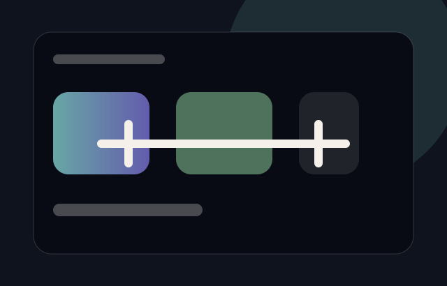

Product / web app
PacePot
A savings goal calculator I designed, built, and shipped. Goals, pots, progress tracking, and a guided tour for first-time users.
Live at pacepot.comApp UIMobile First
Visit the live site